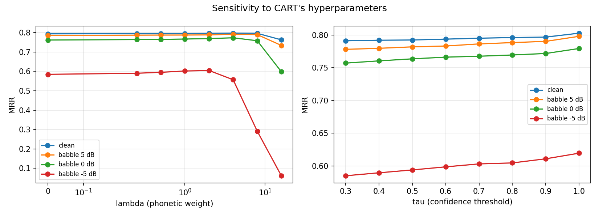

Spoken-document retrieval fails on exactly the words that matter most. CART uses the recognizer's own uncertainty to find the right passage even when its key term was transcribed wrongly — with no training, no context documents, and no entity recognizer.
A retrieval-augmented system over spoken archives — lectures, meetings, podcasts, call recordings — almost always works as a cascade: transcribe the audio, then run text retrieval over the transcript. The transcription step throws away everything except its single best guess, and that guess is wrong in a very particular way.
Recognition errors are not spread evenly across words. They concentrate on named entities, technical terms and numbers: precisely the tokens that carry the information need, and precisely the tokens users type into a search box. Common function words, which the language model can predict from context, survive almost intact.
We measured this directly on our collection. Named entities are 17% of all tokens but consistently carry two to four times the error rate of everything else:
faster-whisper small.en on Spoken-SQuAD with babble noise added at decreasing signal-to-noise ratios. Even on clean audio, entities are mistranscribed four times as often as other words.So the cascade loses the search term and keeps the filler. Worse, it loses it silently: the transcript reads as fluent English, and nothing downstream can tell that "the cell membrane" became "the sail membrane".
Here is the opening we exploit. A beam-search decoder does not actually have one guess — it has several, scored. And it attaches a probability to every word it emits. When it mistranscribes a name, two things are usually true:
All of that is discarded when the pipeline writes out 1-best text. CART's claim is simply that it should not be.
Why not just fix the transcript? Choosing a different word for the index means committing to it, and a wrong commitment is worse than uncertainty. CART never overwrites the recognizer's output. It keeps the 1-best as the primary signal and adds the alternatives as secondary, down-weighted evidence, so a passage can be found by either spelling without the mistake being made twice.
CART is a retrieval layer, not a model. It runs once over the recognizer's output to build an index, needs no training, no external corpus and no entity recognizer, and adds nothing to the recognition pass itself.
Every word whose probability falls below a threshold τ gets the spellings that competing beams proposed at the same position added to the index as extra postings, carrying weight α = 0.5. Two details keep this honest:
Getting the alternatives out was the hardest engineering problem in the project. faster-whisper exposes only the 1-best; its CTranslate2 backend can return N-best hypotheses but the wrapper never asks for them, and the relevant attributes are read-only. We insert a delegating proxy around the inner model that injects num_hypotheses into each generate call and captures the full result. Because hypothesis 0 is identical to the 1-best, concatenating hypothesis k across the 30-second windows yields an alternative transcript that can be aligned to the primary one with difflib, recovering per-position competing spellings.
Sometimes no beam contains the right word. The recognizer heard something, though, and what it wrote usually sounds like what was said. So we also index the pronunciation of low-confidence terms, letting a query term match a span that no spelling in the index matches.
A plain edit distance over phoneme symbols is too blunt for this. It scores S EH L against S EY L exactly as it scores S EH L against S P L — one substitution each — when the first pair is a real confusion and the second is not. We therefore weight substitutions by articulatory features: place, manner and voicing for consonants, height, backness, rounding and diphthong status for vowels. Dropping an unstressed schwa or a glide is also made cheap, because recognizers do it constantly.
| word pair | ARPAbet | plain edit distance | our feature-weighted similarity |
|---|---|---|---|
| cell / sail | S EH L vs S EY L | 1 substitution | 0.84 (confusable) |
| cell / table | S EH L vs T EY B AH L | 3 edits | 0.43 (not confusable) |
The channel is deliberately a fallback. It is suppressed for any document whose 1-best already contains the query term, so it can only ever add matches where surface retrieval has already failed. Candidates are restricted by phoneme-bigram blocking so each query term is compared against plausible vocabulary rather than the whole index.
The two added channels are useful exactly when the transcript is unreliable, and harmful when it is not. So the final score scales the phonetic contribution by the segment's own uncertainty:
s = s_text + λ · (1 − c) · s_phonetic
c = mean word confidence for the segment
λ = 2.0 how far to trust the phonetic channel at all
τ = 0.8 confidence below which a word is expanded
α = 0.5 posting weight for alternative spellings
θ = 0.55 minimum phonetic similarity to count as a matchA segment the recognizer is sure about has c → 1, which switches the phonetic channel off. A segment it struggled with gets the full benefit. All four parameters were tuned once on a development split and held fixed for every reported number.
See it work. The interactive demo runs this scoring in your browser on real recognizer output — genuine confidences, genuine beam alternatives — so you can watch which words get expanded, which phonetic matches fire, and how the ranking changes as you move τ and λ.
faster-whisper small.en, beam search with 8 beams, 8 hypotheses retained| system | what it tests |
|---|---|
| BM25 / reference transcript | upper bound — what retrieval would score if transcription were perfect |
| BM25 / Whisper 1-best | the standard cascade, and the baseline every test is run against |
| Uniform N-best fusion | same beam alternatives as CART, but added everywhere — isolates whether targeting matters |
| Dense retrieval / 1-best | a learned retriever in the comparison, standing in for SpeechRAG |
| CART | confidence-targeted expansion + phonetic fallback |
CART beats the standard cascade at every noise level, and the margin grows as recognition degrades — which is the behaviour the method predicts and the reason it exists.
| system | 4.2% WER | 5.7% WER | 10.9% WER | 37.2% WER | ms / query |
|---|---|---|---|---|---|
| BM25 / reference transcript | 0.8081 | 0.8081 | 0.8081 | 0.8081 | 0.06 |
| BM25 / Whisper 1-best | 0.7892 | 0.7760 | 0.7521 | 0.5736 | 0.06 |
| Uniform N-best fusion | 0.7961* | 0.7891* | 0.7646* | 0.5879* | 0.07 |
| Dense retrieval / 1-best | 0.6984 | 0.6955 | 0.6712 | 0.5121 | 3.96 |
| CART | 0.7960* | 0.7883* | 0.7694* | 0.6046* | 81.90 |
MRR on 4,021 held-out test queries. * = significantly better than BM25 / 1-best, two-sided paired bootstrap on reciprocal rank, 5,000 resamples, p < 0.05. Every starred difference in fact reaches p < 2×10−4, the resolution limit of the test. Latency is for the hardest condition.
| |||||
Reading across: CART is the best non-oracle system at 10.9% and 37.2% WER. On nearly clean audio it is statistically indistinguishable from untargeted N-best fusion (0.7960 against 0.7961) — there is simply very little to repair when 96% of words are right, and the total headroom to the oracle is 0.019 MRR. The method separates where the problem it addresses actually exists.
Recall improves in the same direction. At 37.2% WER, Recall@1 goes 0.4942 → 0.5208 and Recall@10 goes 0.7364 → 0.7722, so CART is not merely reshuffling the top of the list — it is pulling genuinely missed passages into the candidate set.
If CART works for the reason we claim, its advantage should be larger on queries that mention a named entity, because that is where transcription fails. It is, consistently, by a factor of roughly 1.6:
| condition | NE queries (n=2,400) | CART | gain | other queries (n=1,621) | CART | gain |
|---|---|---|---|---|---|---|
| clean | 0.8290 | 0.8379 | +0.0089 | 0.7303 | 0.7339 | +0.0036 |
| babble 5 dB | 0.8131 | 0.8275 | +0.0144 | 0.7211 | 0.7302 | +0.0091 |
| babble 0 dB | 0.7841 | 0.8045 | +0.0204 | 0.7046 | 0.7175 | +0.0129 |
| babble −5 dB | 0.5941 | 0.6306 | +0.0365 | 0.5431 | 0.5662 | +0.0231 |
| MRR, split by whether the query mentions a named entity of its gold passage. Baseline columns are BM25 / 1-best. | ||||||
Expanding only uncertain spans is cheaper than expanding everything. At the hardest condition CART adds 11.6% more postings than the 1-best index, where uniform N-best fusion adds 15.7% — and CART retrieves better. Targeting buys both accuracy and a smaller index.
| condition | BM25 / 1-best | N-best uniform | CART | CART overhead | phonetic terms |
|---|---|---|---|---|---|
| clean | 153,972 | 160,284 (+4.1%) | 157,923 | +2.6% | 10,568 |
| babble 5 dB | 153,705 | 161,457 (+5.0%) | 159,014 | +3.5% | 12,761 |
| babble 0 dB | 152,473 | 164,714 (+8.0%) | 161,576 | +6.0% | 17,386 |
| babble −5 dB | 155,185 | 179,486 (+15.7%) | 173,189 | +11.6% | 20,071 |
| Posting-list entries. The phonetic index is a separate, smaller structure over low-confidence terms only. | |||||
We removed one component at a time, at the tuned configuration, on the same test queries. The answer is clear and it is not the one the proposal assumed.
| variant | 4.2% WER | 5.7% WER | 10.9% WER | 37.2% WER | ms / query |
|---|---|---|---|---|---|
| CART, full | 0.7960 | 0.7883 | 0.7694 | 0.6046 | 81.2 |
| − phonetic channel | 0.7937 | 0.7854 | 0.7618 | 0.5848 | 0.06 |
| − alternative-spelling index | 0.7913 | 0.7794 | 0.7603 | 0.5949 | 81.0 |
| − confidence gate (drop the 1−c factor) | 0.7511 | 0.7337 | 0.6996 | 0.4639 | 81.1 |
| − confidence targeting (τ = 1, expand every word) | 0.8027 | 0.7979 | 0.7793 | 0.6195 | 92.8 |
| MRR. Every variant differs from full CART at p < 2×10−4. | |||||
The confidence gate is the single most important component. Removing the (1 − c) factor costs 0.045 MRR on clean audio and 0.141 at 37.2% WER — an order of magnitude more than removing either retrieval channel. Weighting the phonetic evidence by how unsure the recognizer was is what keeps it from poisoning the ranking exactly when it fires most often.
Confidence targeting, by contrast, is an efficiency mechanism — not an accuracy one. Setting τ = 1 (expand every word, uncertain or not) scores higher than full CART in all four conditions, and the τ sweep rises monotonically to 1.0 with no interior optimum anywhere. What τ = 0.8 actually buys is latency: 106.7 ms → 36.6 ms per query on clean audio, for 0.0067 MRR. That trade gets worse as noise rises (92.8 → 81.2 ms at 37% WER, for 0.0149 MRR), because half the words are already below the threshold.
So the proposal conflated two mechanisms that behave differently: scaling by confidence is essential; thresholding on confidence is a speed knob whose benefit is concentrated on clean audio. We report this as a negative result for the targeting idea, and the λ sweep below explains why the scaling matters so much.
The λ sweep also shows that the phonetic channel has to be weighted carefully rather than simply switched on. There is a genuine interior optimum that moves with noise — λ = 4 on clean audio, λ = 2 at 37% WER — and over-weighting is catastrophic at high error rates, where λ = 8 collapses MRR to 0.291 and λ = 16 to 0.062. A phonetic channel trusted unconditionally destroys retrieval; the same channel scaled by confidence improves it.

scripts/07_report.py from the same run as every table on this page.Better retrieval is only interesting if it survives to the answer. We fed each system's top-3 passages to Qwen2.5-1.5B-Instruct and scored exact match, token-F1 and an LLM judge on 400 test questions per condition.
| system | EM | token-F1 | 95% CI | LLM judge |
|---|---|---|---|---|
| clean — 4.2% WER | ||||
| reference transcript | 0.5850 | 0.6632 | ±0.043 | 0.7100 |
| BM25 / 1-best | 0.5300 | 0.6296 | ±0.044 | 0.6775 |
| N-best uniform | 0.5275 | 0.6308 | ±0.043 | 0.6775 |
| CART | 0.5325 | 0.6330 | ±0.043 | 0.6825 |
| babble 0 dB — 10.9% WER | ||||
| reference transcript | 0.5850 | 0.6632 | ±0.043 | 0.7100 |
| BM25 / 1-best | 0.4700 | 0.5712 | ±0.043 | 0.6125 |
| N-best uniform | 0.4750 | 0.5708 | ±0.044 | 0.6175 |
| CART | 0.4800 | 0.5785 | ±0.043 | 0.6275 |
| babble −5 dB — 37.2% WER | ||||
| reference transcript | 0.5850 | 0.6632 | ±0.043 | 0.7100 |
| BM25 / 1-best | 0.2525 | 0.3311 | ±0.042 | 0.3675 |
| N-best uniform | 0.2475 | 0.3286 | ±0.042 | 0.3650 |
| CART | 0.2350 | 0.3212 | ±0.040 | 0.3575 |
CART is nominally ahead on both the clean and 0 dB conditions and nominally behind at −5 dB, but none of these differences is statistically significant, and the honest reading is that this stage cannot resolve them. The confidence interval half-width is ±0.043 against effects of 0.003–0.010; separating those needs roughly 4,000 questions and we ran 400. This is an underpowered measurement, not evidence of no effect.
The more interesting number is the oracle gap. At 37.2% WER, a perfect transcript takes token-F1 from 0.3311 to 0.6632 — it doubles answer quality. So there is enormous headroom at high error rates, but it is not reachable from the retrieval side: CART hands the reader the correct passage more often, and that passage is still a 37%-WER transcript. Retrieving the right garbled text does not let a reader answer from it.
That is a result about where the bottleneck sits. Below roughly 10% WER, retrieval is the limiting factor and a retrieval fix helps. At 37% WER the limiting factor has moved to the transcript itself, and no retrieval layer can recover it.
One downstream variant did produce a clear, adequately powered finding, and it is negative. Alternative-Context Generation — handing the reader the uncertainty directly, as {cell|sail} membrane — measurably hurts: −0.050 token-F1 on clean audio (p = 0.003) and −0.033 at 37.2% WER (p = 0.043). A 1.5B reader is confused by disjunctions more than it is helped by the extra coverage. Alternatives belong in the index, where they cost nothing but a posting, and not in the prompt.
all-MiniLM-L6-v2 with no domain adaptation, and it is the weakest system everywhere. That says something about untuned dense retrieval on this collection, not about learned retrieval in general.small.en with additive babble on read English speech. Larger recognizers have better confidence calibration and fewer entity errors, which would shrink the headroom CART exploits.All numbers on this page come from a single pipeline run on the WPI Turing cluster, recorded with job IDs, failures and fixes in the run log. No reported figure comes from a development machine.
git clone https://github.com/Khangxlei/cart-audio-rag.git
cd cart-audio-rag
pip install -r requirements.txt
python scripts/validate_env.py # 10 pre-flight checks, ~30 s
python scripts/01_prepare_data.py # build the collection
python scripts/02_run_asr.py --condition clean # transcribe (GPU)
python scripts/03_tune_cart.py # tune on dev
python scripts/04_eval_retrieval.py # the main experiment
python scripts/06_ablations.py # component ablations
python scripts/05_eval_qa.py --judge # downstream QA
python scripts/07_report.py # regenerate REPORT.md and figures